Configurando el entorno de desarrollo
Objetivos de esta clase:
- Introducción al entorno de desarrollo (terminal, herramientas, etc.)
- Instalación de FastAPI y sus dependencias
- Configuración de las herramientas de desarrollo
- Ejecución del primer "Hello, World!" con FastAPI con tests!
En esta sección, iniciaremos nuestro recorrido para la construcción de una API con FastAPI. Partiremos de lo básico, configurando nuestro entorno de desarrollo. Discutiremos desde la elección e instalación de la versión correcta de Python hasta la instalación y configuración de Poetry, un gestor de paquetes y dependencias para Python. Además, instalaremos y configuraremos una serie de herramientas de desarrollo útiles, como Ruff, pytest y poethepoet.
Después de configurar nuestro entorno, crearemos nuestro primer programa "Hello, World!" con FastAPI. Esto nos permitirá verificar que todo esté funcionando correctamente. Y, finalmente, exploraremos una parte crucial del Desarrollo Orientado por Tests (TDD), escribiendo nuestro primer test con Pytest.
Entorno de Desarrollo
Necesitas algunas herramientas instaladas:
- Un editor de texto a tu elección
- Una terminal a tu elección
- Python, en una versión oficialmente soportada.
- Git: Para gestionar versiones del proyecto.
- Docker: Para crear un container de la aplicación.
- OPCIONAL (extremadamente recomendado): El gh para crear el repositorio y hacer cambios sin necesitar acceder a la página de Github
pipx
El pipx es una herramienta usada para instalar y ejecutar herramientas Python globalmente en el sistema de forma segura. Diferente del pip, que instala herramientas sin un entorno virtual (por defecto) y puede "ensuciar" nuestro entorno, el pipx crea un entorno virtual y aísla cada herramienta dentro de él, facilitando la instalación de paquetes globales.
Podemos usar el pipx para instalar herramientas globales y ejecutar algunas que se usarán solo una vez.
Para instalar el pipx:
De esta forma, la única dependencia global que tendremos en nuestro sistema será el propio pipx.
Existen otras formas de instalar el pipx
En caso de que tengas un gestor de paquetes en tu sistema operativo, es extremadamente recomendado que instales el pipx por él.
Las instrucciones de instalación para cada sistema están disponibles en la documentación del proyecto.
Para que nuestro sistema reconozca el camino de las herramientas instaladas vía pipx podemos ejecutar el comando:
- Agrega el directorio de los entornos virtuales del
pipxalPATHdel sistema.
Este comando agrega al PATH del sistema todos los binarios instalados por el pipx 🚨. Por lo tanto, recuerda reiniciar el shell después de ejecutarlo.
Poetry
El Poetry es un gestor de proyectos para Python. Puede ayudarnos en diversas etapas del ciclo de desarrollo, como la instalación de versiones específicas de Python, la creación y mantenimiento de proyectos (incluyendo la definición de estructuras de carpetas, la gestión de entornos virtuales y la instalación de bibliotecas), además de permitir la publicación de paquetes y mucho más.
En nuestro proyecto, será el componente central para agrupar y ejecutar todas las tareas relacionadas al proyecto.
Instalación de Poetry
La instalación de Poetry puede hacerse de diversas maneras, pero para una instalación global y aislada en un entorno virtual, debe hacerse vía pipx:
- Crea un entorno virtual aislado para poetry y lo deja disponible en el sistema.
Comentarios en bloques
Los bloques de código suelen tener comentarios con informaciones adicionales, como este:
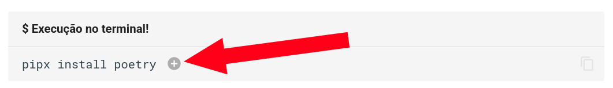
Al hacer clic en un bloque de comentario se abrirá, exhibiendo más informaciones:
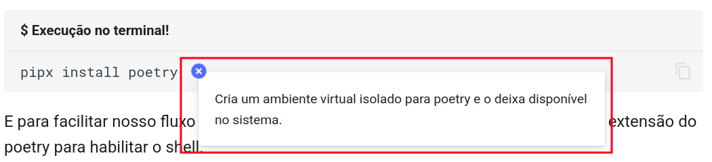
Gestión de versiones de Python
Después de la instalación de Poetry, podemos utilizarlo para gestionar e instalar versiones de Python que deseamos usar en un proyecto. Para este curso, la versión mínima de Python que debes tener es la 3.11, porque algunos recursos que utilizaremos fueron introducidos en esa versión.
Puedes, sin embargo, instalar cualquier versión más nueva. Mi recomendación es siempre que sea posible, usa la versión más actualizada posible:
Para utilizar una versión específica de Python en nuestro ambiente, debemos solicitar a Poetry que instale esa versión:
- Instala la última release da versión 3.14 de python
Una respuesta similar a esta debe ser devuelta al ejecutar el comando:
Para utilizar una versión específica de Python en nuestro ambiente, debemos solicitar a Poetry que instale esa versión:
- Instala la última release da versión 3.13 de python
Una respuesta similar a esta debe ser devuelta al ejecutar el comando:
Para utilizar una versión específica de Python en nuestro ambiente, debemos solicitar a Poetry que instale esa versión:
- Instala la última release da versión 3.12 de python
Una respuesta similar a esta debe ser devuelta al ejecutar el comando:
Para utilizar una versión específica de Python en nuestro ambiente, debemos solicitar a Poetry que instale esa versión:
- Instala la última release da versión 3.11 de python
Una respuesta similar a esta debe ser devuelta al ejecutar el comando:
De esta forma, garantizamos que tenemos una versión compatible de Python instalada.
Entorno virtual local [opcional]
¡Paso opcional!
¡Este paso es opcional! En caso de que ya utilices Poetry con frecuencia o tengas familiaridad con la configuración de tu editor de texto, puedes saltar esta etapa.
Si quieres saber más sobre esto, consulta la documentación de Poetry sobre esta configuración.
Por defecto, Poetry crea entornos virtuales en un directorio centralizado fuera del proyecto. Esto es genial en diversos escenarios, principalmente en el desarrollo de bibliotecas y cuando trabajamos con múltiples proyectos.
Sin embargo, algunos editores de texto pueden exigir configuraciones adicionales para reconocer automáticamente el entorno virtual creado por Poetry. Cuando esto no sucede, es común que aparezcan avisos de importación o errores falsos en el editor, incluso con el proyecto funcionando correctamente. El síntoma más común son aquellas "gusanitos" rojos apareciendo debajo de los imports. Algo como:
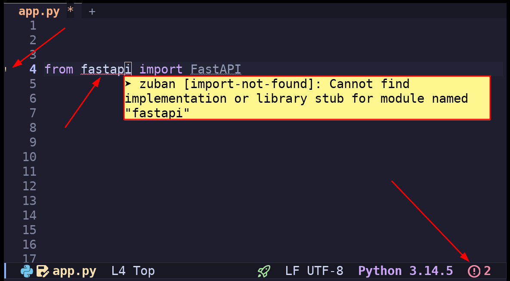
Para evitar este tipo de problema, podemos configurar Poetry para crear el entorno virtual dentro del propio proyecto, en un directorio llamado .venv:
Con esto, muchos editores consiguen detectar automáticamente el entorno virtual del proyecto, reduciendo la necesidad de configuraciones adicionales.
Creando un proyecto
Ahora que tenemos Poetry y la versión de Python que usaremos disponible, podemos iniciar la creación de nuestro proyecto. El primer paso es crear un nuevo proyecto utilizando Poetry, con el comando poetry new. A continuación, navegaremos hasta el directorio creado:
- Crea un paquete python llamado
fast_zeroen el formatoflat. Por defecto, Poetry utiliza el formatosrc. Más informaciones sobre esto aquí
Creará una estructura de archivos y carpetas como esta:
Con la estructura inicial del proyecto creada y estando en el directorio del proyecto, podemos informar a Poetry que queremos usar la versión de Python que instalamos. Para eso, utilizamos el siguiente comando:
En conjunto con esta instrucción, debemos también especificar a Poetry que usaremos exactamente la versión 3.14 en nuestro proyecto. Para eso, alteramos el archivo de configuración pyproject.toml en la raíz del proyecto:
- La expresión
">=3.14,<4.0"significa que cualquier versión mayor o igual a3.14y menor que 4.0 será válida para el proyecto.
En conjunto con esta instrucción, debemos también especificar a Poetry que usaremos exactamente la versión 3.13 en nuestro proyecto. Para eso, alteramos el archivo de configuración pyproject.toml en la raíz del proyecto:
- La expresión
">=3.13,<4.0"significa que cualquier versión mayor o igual a3.13y menor que 4.0 será válida para el proyecto.
En conjunto con esta instrucción, debemos también especificar a Poetry que usaremos exactamente la versión 3.12 en nuestro proyecto. Para eso, alteramos el archivo de configuración pyproject.toml en la raíz del proyecto:
- La expresión
">=3.12,<4.0"significa que cualquier versión mayor o igual a3.12y menor que 4.0 será válida para el proyecto.
En conjunto con esta instrucción, debemos también especificar a Poetry que usaremos exactamente la versión 3.11 en nuestro proyecto. Para eso, alteramos el archivo de configuración pyproject.toml en la raíz del proyecto:
- La expresión
">=3.11,<4.0"significa que cualquier versión mayor o igual a3.11y menor que 4.0 será válida para el proyecto.
De esta forma, garantizamos que Poetry usará la versión correcta de Python al crear el entorno virtual para nuestro proyecto.
Instalando FastAPI
Con toda la base de nuestro proyecto lista, podemos finalmente instalar FastAPI:
- Crea el entorno virtual con la versión que seteamos en el
env use - Agrega FastAPI en nuestro proyecto y entorno virtual
Primera Ejecución de un "Hello, World!"
Una cosa bastante interesante sobre FastAPI es que es un framework web basado en funciones. De la misma forma en que creamos funciones tradicionalmente en python, podemos extender esas funciones para que sean servidas por el servidor. Por ejemplo:
Esta función en python básicamente retorna un diccionario con una clave llamada 'message' y un mensaje '¡Hola Mundo!'. Si agregamos esta función en un nuevo archivo llamado app.py en el directorio fast_zero. Podemos hacer la llamada de ella por el terminal interactivo (REPL):
De forma tradicional, como todas las funciones en python.
Consejo: Cómo abrir el terminal interactivo (REPL)
Para abrir el terminal interactivo con tu código cargado, debes llamar a Python en la terminal usando -i:
El intérprete de Python ejecuta el código del archivo y retorna el shell después de ejecutar todo lo que está escrito en el archivo.
Para nuestro caso específico, como el nombre del archivo es fast_zero/app.py, debemos ejecutar este comando en la terminal:
Usando un decorador de FastAPI, podemos hacer que una determinada función sea accesible por la red:
| fast_zero/app.py | |
|---|---|
- Importando de la biblioteca fastapi el objeto FastAPI
- Iniciando una aplicación FastAPI
- Definiendo un endpoint con la dirección
/accesible por el método HTTPGET - Función que será ejecutada cuando la dirección
/sea accedida por un cliente - Los datos que serán retornados por la dirección, cuando el endpoint sea llamado
La línea destacada @app.get('/') expone nuestra función para ser servida por FastAPI. Cuando un cliente acceda a nuestra dirección de red en el camino /, usando el método HTTP GET1, la función será ejecutada. De esta manera, tenemos todo el código necesario para crear nuestra primera aplicación web con FastAPI.
Así podemos iniciar el servidor de desarrollo:
poetry runejecuta un comando de shell usando el virtualenv activado.
La respuesta del comando en la terminal debe ser parecida a esta:
INFO Using path fast_zero/app.py
INFO Resolved absolute path /home/dunossauro/git/fastapi-do-zero/codigo_das_aulas/01/fast_zero/app.py
INFO Searching for package file structure from directories with __init__.py files
INFO Importing from /home/dunossauro/git/fastapi-do-zero/codigo_das_aulas/01
╭─ Python package file structure ─╮
│ │
│ 📁 fast_zero │
│ ├── 🐍 __init__.py │
│ └── 🐍 app.py │
│ │
╰─────────────────────────────────╯
INFO Importing module fast_zero.app
INFO Found importable FastAPI app
╭──── Importable FastAPI app ─────╮
│ │
│ from fast_zero.app import app │
│ │
╰─────────────────────────────────╯
INFO Using import string fast_zero.app:app
╭────────── FastAPI CLI - Development mode ───────────╮
│ │
│ Serving at: http://127.0.0.1:8000 │
│ │
│ API docs: http://127.0.0.1:8000/docs │
│ │
│ Running in development mode, for production use: │
│ │
│ fastapi run │
│ │
╰─────────────────────────────────────────────────────╯
INFO: Will watch for changes in these directories: ['/home/dunossauro/git/fastapi-do-zero/codigo_das_aulas/01']
INFO: Uvicorn running on http://127.0.0.1:8000 (Press CTRL+C to quit)
INFO: Started reloader process [893203] using WatchFiles
INFO: Started server process [893207]
INFO: Waiting for application startup.
INFO: Application startup complete.
El mensaje de respuesta del CLI: serving: http://127.0.0.1:8000 tiene una información bastante importante.


- Nos muestra qué protocolo está siendo utilizado, en este caso el HTTP, que es el protocolo estándar de la web;
- La dirección de red (IP) que está escuchando, en este caso
127.0.0.1, dirección especial (loopback) que apunta a nuestra propia máquina; - El puerto
:8000, que es el puerto de nuestra máquina que está reservado para nuestra aplicación.
Ahora, con el servidor inicializado, podemos usar un cliente para acceder a la dirección http://127.0.0.1:8000.
El cliente más tradicional de la web es el navegador. Podemos escribir la dirección en la barra de navegación y si todo ocurrió correctamente, debes ver el mensaje "¡Hola Mundo!" en formato JSON.
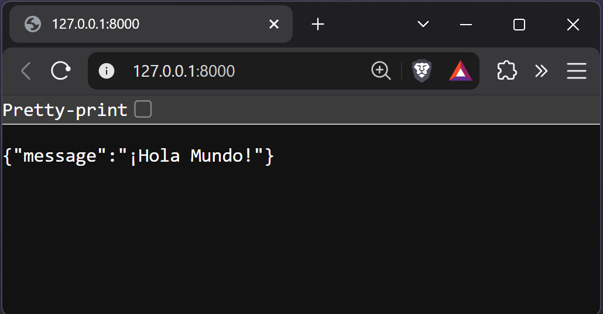
Para detener la ejecución de fastapi en el shell, escribe Ctrl+C y el mensaje
Shutting downaparecerá, mostrando que el servidor fue finalizado.
Diferentes clientes para nuestra aplicación
Existen otros clientes HTTP que no son el browser. Hay aplicaciones de línea de comando como curl:
También existe un cliente HTTP escrito en python, el HTTPie:
http 127.0.0.1:8000
HTTP/1.1 200 OK
content-length: 25
content-type: application/json
date: Thu, 11 Jan 2024 11:46:32 GMT
server: uvicorn
{
"message": "¡Hola Mundo!"
}
Existen incluso aplicaciones gráficas de código abierto pensadas para ser clientes HTTP para APIs. Como el hoppscotch:
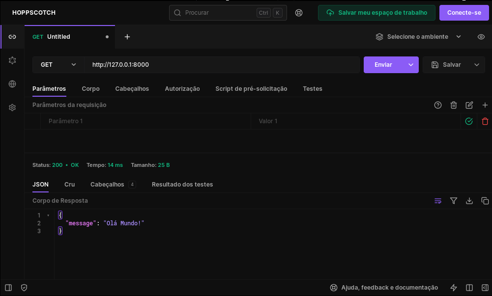
O como el Bruno:
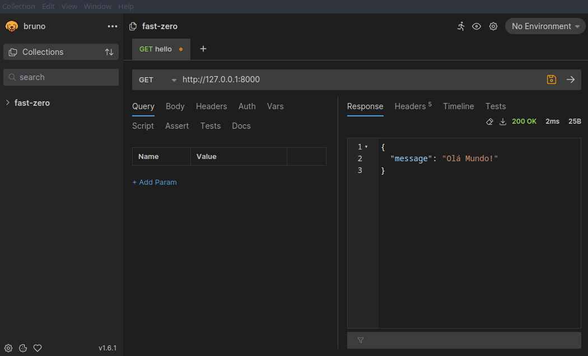
Uvicorn
FastAPI es genial para crear APIs, pero no puede hacer que estén disponibles en la red solo. Para que podamos acceder a esas APIs por un navegador u otras aplicaciones clientes, es necesario un servidor. Es ahí donde Uvicorn entra en escena. Actúa como ese servidor, disponibilizando la API de FastAPI en red. Esto permite que la API sea accedida desde otros dispositivos o programas.
Como notamos en la respuesta del comando fastapi dev fast_zero/app.py:
INFO: Uvicorn running on http://127.0.0.1:8000 (Press CTRL+C to quit)
INFO: Started reloader process [893203] using WatchFiles
INFO: Started server process [893207]
INFO: Waiting for application startup.
INFO: Application startup complete.
Siempre que usemos fastapi para inicializar la aplicación en el shell, hace una llamada interna para inicializar uvicorn. Por ese motivo, aparece en las respuestas HTTP y también en la ejecución del comando.
Podrías llamar a la aplicación directamente por Uvicorn también
Este comando le dice a uvicorn lo siguiente: en la carpeta fast_zero existe un archivo llamado app. Dentro de ese archivo, tenemos una aplicación para ser servida con el nombre de app. El comando está compuesto por uvicorn carpeta.archivo:variable.La respuesta del comando en la terminal debe ser parecida a esta:
Instalando las herramientas de desarrollo
Las elecciones de herramientas de desarrollo, de forma general, son elecciones bastante personales. No suelen ser consensuales ni siquiera en equipos de desarrollo. Dicho esto, instalaremos algunas herramientas que nos parecen que son útiles para el desarrollo del proyecto.
Las herramientas elegidas son:
- poethepoet: herramienta usada para creación de comandos. Como ejecutar la aplicación, correr los tests, etc.
- pytest: herramienta para tests
- coverage: herramienta para medir la cobertura de tests
- ruff: Una herramienta que tiene dos funciones en nuestro código:
- Un analizador estático de código (un linter), para avisarnos si estamos infringiendo alguna buena práctica de programación;
- Un formateador de código. Para seguir un estilo único de código. Vamos a basarnos en PEP-8.
- typos: detector de errores tipográficos en inglés, lo cual es útil para los hablantes nativos de castellano
Instalando las herramientas de desarrollo
Todas las herramientas de desarrollo se instalan como dependencias de desarrollo (grupo dev):
Configurando las herramientas de desarrollo
Después de la instalación de las herramientas de desarrollo, necesitamos definir las configuraciones de cada una individualmente en el archivo pyproject.toml.
Ruff
Ruff es una herramienta moderna en python, escrita en rust, compatible2 con los proyectos de análisis estático escritos y mantenidos originalmente por la comunidad en el proyecto PYCQA3 y tiene dos funciones principales:
- Analizar el código de forma estática (Linter): Efectuar la verificación si estamos programando de acuerdo con buenas prácticas de python.
- Formatear el código (Formatter): Efectuar la verificación del código para estandarizar un estilo de código predefinido.
Para configurar el ruff armamos la configuración en 3 tablas distintas en el archivo pyproject.toml. Una para las configuraciones globales, una para el linter y una para el formateador.
Configuración global
En la configuración global del Ruff queremos alterar solamente dos cosas. La longitud de línea a 79 caracteres (conforme sugerido en la PEP-8) y, a continuación, informaremos que el directorio de migraciones de base de datos será ignorado en la verificación y en el formateo:
Nota sobre "migrations"
En esta fase de configuración, excluiremos la carpeta migrations, esto puede no tener mucho sentido en este momento. Sin embargo, cuando iniciemos el trabajo con la base de datos, la herramienta Alembic hace generación de código automático. Por ser códigos generados automáticamente, no queremos alterar la configuración hecha por ella.
Linter
Durante el análisis estático del código, queremos buscar por cosas específicas. En Ruff, necesitamos decir exactamente qué debe analizar. Esto se hace por códigos. Usaremos estos:
I(Isort): Verificación de ordenamiento de imports en orden alfabéticoF(Pyflakes): Busca por algunos errores en relación a buenas prácticas de códigoE(Errores pycodestyle): Errores de estilo de códigoW(Avisos pycodestyle): Avisos de cosas no recomendadas en el estilo de códigoPL(Pylint): Como elF, también busca por errores en relación a buenas prácticas de códigoPT(flake8-pytest): Verificación de buenas prácticas de Pytest
Para más información sobre la configuración y sobre los códigos del ruff y de los proyectos del PyCQA, puedes chequear la documentación del ruff o las documentaciones originales de los proyectos PyQCA.
Formatter
El formateo del Ruff prácticamente no necesita ser alterado. Pues va a seguir las buenas prácticas y usar la configuración global de 79 caracteres por línea. La única alteración que haremos es el uso de comillas simples ' en lugar de comillas dobles ":
Recordando que la opción de usar comillas simples es totalmente personal, puedes usar comillas dobles si quieres.
pytest
El Pytest es un framework de tests, que usaremos para escribir y ejecutar nuestros tests. Lo configuraremos para reconocer el camino base para ejecución de los tests en la raíz del proyecto .:
| pyproject.toml | |
|---|---|
En la segunda línea, usamos la opción addopts del pytest. Esta opción le dice que todas las veces en que el pytest sea llamado, va a agregar esos parámetros a la llamada, sin que tengamos que declararlos explícitamente.
Quedando algo como:
Cada parámetro de esos tiene un significado importante:
-p no:warnings: decimos que no queremos mensajes de "warnings" en la salida de los tests. Suele dejar más limpio.--cov=fast_zero: directorio donde está nuestro código que será testeado, para mostrar por dónde pasan los tests--cov-context=test: aísla tests en contextos, para decir exactamente qué test ejecuta cada línea de código.
De esta forma, al testear, tendremos una visualización buena y coherente de lo que testean.
Vamos a ver estas cosas en acción aquí.
Typos
El typos nos va a ayudar con algunos errores que terminan sucediendo cuando escribimos código en inglés.
Vamos a suponer que nuestro código esté así:
| fast_zero/app.py | |
|---|---|
- Subraya como un error de grafía la escritura del string
'messsage'. Escrita con una S de más.
Subraya como un error de grafía la escritura del string 'messsage'. La palabra debería ser escrita con dos "me-ss-age", no con tres "me-sss-age".
Este tipo de errores triviales son los que el Typos nos ayuda a detectar. Si lo ejecutamos, typos, en la terminal:
Nos presentará una respuesta como esta:
error: `messsage` should be `message`
╭▸ ./fast_zero/app.py:7:14
│
7 │ return {'messsage': '¡Hola Mundo!'}
╰╴ ━━━━━━━━
Diciéndonos que el string contenido en la línea 8 columna 14 tiene un error: messsage debería ser message.
Configurando el análisis
Como hablantes de español, no siempre queremos escribir todo en inglés, como la documentación o el README.md del repositorio.
En estos casos, podemos configurar el typos para ignorar determinados archivos:
- Aquí todos los archivos (
*) con la extensión.mdestán siendo ignorados. El directorio"migrations"va a ser ignorado preventivamente. Pero, este directorio solo será insertado en la clase 05.
De esta forma, el typos dejará de analizar archivos Markdown, por ejemplo.
Poe the Poet
La idea del Poe the Poet (o simplemente poe) es ser un ejecutor de tareas (task runner) integrado a nuestro ecosistema de desarrollo. En lugar de tener que recordar comandos largos y complejos, como los de FastAPI que vimos en la ejecución de la aplicación, ¿qué tal substituir todo simplemente por poetry serve?
Esto funciona para cualquier comando complicado en nuestra aplicación, simplificando las llamadas y centralizando el flujo de trabajo en el archivo de configuración del proyecto.
Poe tiene diversas formas de ser instalado, en el proyecto vía pyproject.toml, globalmente vía pipx, o directamente como un plugin de poetry. Vamos a inyectarlo vía pipx:
- Instala el poethepoet en el mismo venv del pipx con el poetry, extendiendo las funcionalidades de él.
¿puedo instalar de otras formas?
Sí, puedes: Guía de instalación del poethepoet, pero para el curso, el mejor camino tal vez sea vía pipx, como lo instalamos.
- Configuración para que el poe entienda que debe integrarse directamente como un comando nativo de Poetry (permitiendo correr
poetry serveen vez depoetry poe serve).
Después de esta configuración inicial, podemos definir diversos comandos y agrupar diversas de nuestras herramientas simplificando bastante nuestro flujo de desarrollo:
[tool.poe.tasks]
lint = { cmd = "ruff check" }
format.sequence = [
{ cmd = "ruff check --fix" },
{ cmd = "ruff format" },
]
serve = "fastapi dev fast_zero/app.py"
test.sequence = [
"lint",
{ cmd = "pytest -s -x -vv $POE_EXTRA_ARGS" },
{ cmd = "coverage html --show-contexts" },
]
Donde cada comando es responsable de una, o un grupo de operaciones:
lint: ejecuta elruff checkpara garantizar las buenas prácticasformat: ejecuta una secuencia que primero corrige lo que sea posible automáticamente (ruff check --fix) y después formatea el estilo del código (ruff format).serve: ejecuta el servidor de desarrollo de FastAPI.test: ejecuta una secuencia completa de tests: corre ellint, ejecuta los tests con pytest de forma verbosa (-vv), permite pasar argumentos extras por la terminal a través de la variable$POE_EXTRA_ARGSy, por último, genera el informe de cobertura.
Para ejecutar un comando, es bastante más simple, necesitando solamente pasar la palabra poetry <comando>.
Entendiendo Tareas en Secuencia
Observa que para los comandos format y test utilizamos la propiedad .sequence en vez de pasar una string directa de comando.
En el Poe the Poet, una secuencia nos permite encadenar múltiples comandos que serán ejecutados de forma lineal (uno después del otro). Un detalle crucial sobre el comportamiento de las secuencias es que como se ejecutan en cadena, si una falla, el poe no va a ejecutar las siguientes.
Ejemplo de un archivo de configuración pyproject.toml completo
Un punto importante es que las versiones de los paquetes pueden variar dependiendo de la fecha en que hagas la instalación de los paquetes. Este archivo es solamente un ejemplo.
Los efectos de estas configuraciones de desarrollo
En caso de que hayas copiado el código que usamos para definir fast_zero/app.py, puedes testear los comandos que creamos para el poe:
De esta forma, veremos que cometimos algunas infracciones en el formateo de la PEP-8. El ruff nos informará que deberíamos haber agregado dos líneas antes de una definición de función:
fast_zero/app.py:5:1: E302 [*] Expected 2 blank lines, found 1
|
3 | app = FastAPI()
4 |
5 | @app.get('/')
| ^ E302
6 | def read_root():
7 | return {'message': '¡Hola Mundo!'}
|
= help: Add missing blank line(s)
Found 1 error.
[*] 1 fixable with the `--fix` option.
Para corregir esto, podemos usar nuestro comando de formateo de código:
Introducción al Pytest: Testeando el "Hello, World!"
Antes de entender la dinámica de los tests, necesitamos entender el efecto que tienen en nuestro código. Podemos comenzar analizando la cobertura (cuánto de nuestro código está siendo efectivamente testeado). Vamos a ejecutar los tests:
Tendremos una respuesta como esta:
=========================== test session starts ===========================
platform linux -- Python 3.11.7, pytest-7.4.4, pluggy-1.3.0
cachedir: .pytest_cache
rootdir: /home/dunossauro/git/fast_zero
configfile: pyproject.toml
plugins: cov-4.1.0, anyio-4.2.0
collected 0 items
---------- coverage: platform linux, python 3.11.7-final-0 -----------
Name Stmts Miss Cover
-------------------------------------------
fast_zero/__init__.py 0 0 100%
fast_zero/app.py 5 5 0%
-------------------------------------------
TOTAL 5 5 0%
Las líneas en la terminal son referentes al pytest, que dijo que recolectó 0 ítems. Ningún test fue ejecutado.
La parte importante de este Mensaje está en la tabla generada por el coverage. Que dice que tenemos 5 líneas de código (Stmts) en el archivo fast_zero/app.py y ninguna de ellas está cubierta por nuestros tests. Como podemos ver en la columna Miss.
Por no encontrar ningún test, el pytest retornó un "error". Esto significa que nuestra tarea secuencial test no fue ejecutada. Podemos ejecutarla manualmente:
poetry run coverage html --show-contexts
Wrote HTML report to htmlcov/index.html
Esto genera un informe de cobertura de tests en formato HTML. Podemos abrir ese archivo en nuestro navegador y entender exactamente qué líneas del código no están siendo testeadas.
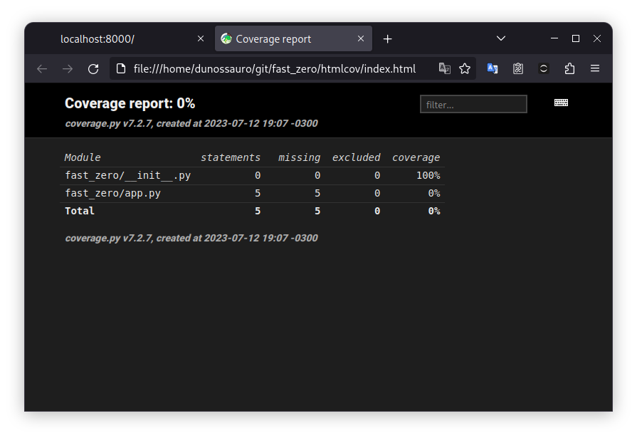
Si hacemos clic en el archivo fast_zero/app.py podemos ver en rojo las líneas que no están siendo testeadas:
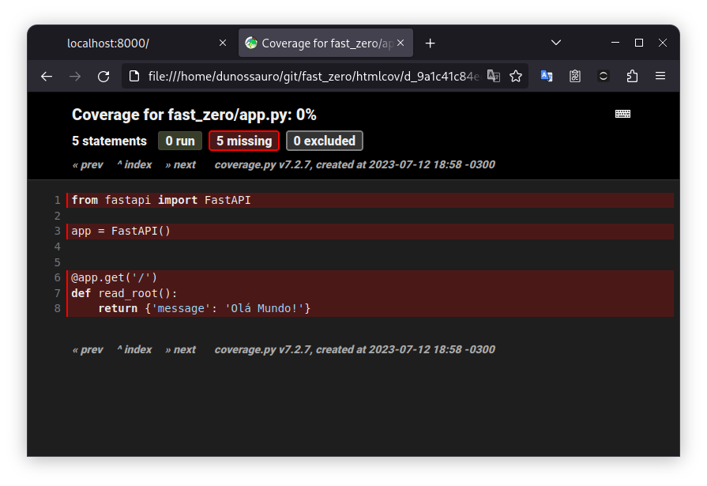
Esto significa que necesitamos testear todo ese archivo.
Escribiendo el test
Ahora, escribiremos nuestro primer test con Pytest. Pero, antes de escribir el test, necesitamos crear un archivo específico para ellos. En la carpeta tests, vamos a crear un archivo llamado test_app.py.
Por convención, todos los archivos de test del pytest deben iniciar con un prefijo test_
.py
Para testear el código hecho con FastAPI, necesitamos un cliente de test. La gran ventaja es que el FastAPI ya cuenta con un cliente de tests en el módulo fastapi.testclient con el objeto TestClient, que necesita recibir nuestro app como parámetro:
| tests/test_app.py | |
|---|---|
- Importa del módulo
testclientel objetoTestClient - Importa nuestro
appdefinido enfast_zero - Crea un cliente de tests usando nuestra aplicación como base
Solo el hecho de haber definido un cliente ya nos muestra una cobertura bastante diferente:
poetry test
# parte del mensaje fue omitida
collected 0 items
---------- coverage: platform linux, python 3.11.3-final-0 -----------
Name Stmts Miss Cover
-------------------------------------------
fast_zero/__init__.py 0 0 100%
fast_zero/app.py 5 1 80%
-------------------------------------------
TOTAL 5 1 80%
Por no recolectar ningún test, el pytest todavía retornó un "error". Para ver la cobertura, necesitaremos ejecutar nuevamente el paso de cobertura manualmente:
poetry run coverage html --show-contexts
Wrote HTML report to htmlcov/index.html
En el navegador, podemos ver que la única línea no "testeada" es aquella donde tenemos la lógica (el cuerpo) de la función read_root. Las líneas de definición están todas verdes:
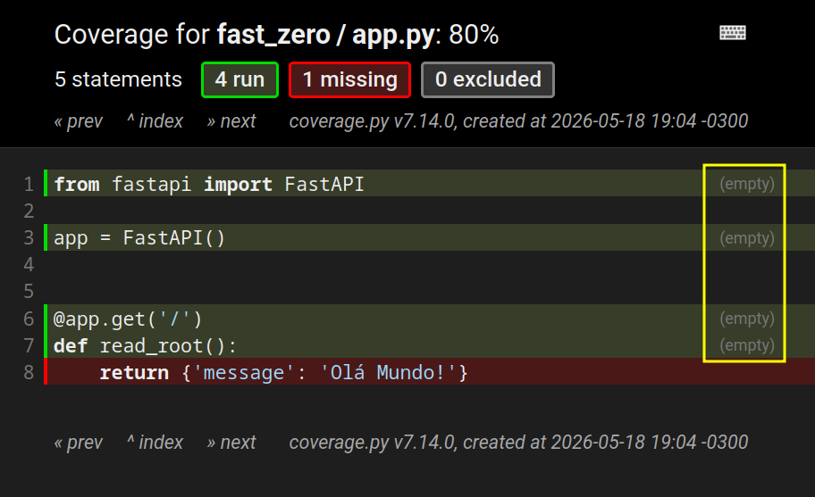
En verde vemos lo que fue ejecutado cuando la herramienta de cobertura corrió, y en rojo lo que no fue. Otra información importante, destacada en amarillo, es el texto (empty). Indica que ningún test ejecutó de hecho esas líneas. Fueron solo cargadas durante el import del archivo, y no por un test específico. Por eso, no exhiben información de contexto.
Para resolver esto, tenemos que crear un test de hecho, haciendo una llamada a nuestra API usando el cliente de test que definimos:
- En el nombre de la función, escribimos generalmente lo que el test de hecho hace. Aquí estamos diciendo que root debe retornar el status OK y el mensaje "hola mundo". Root es el nombre dado a la raíz de la URL. El camino
/, que colocamos en la definición del@app.get('/'). OK es el status que dice que la solicitud ocurrió con éxito en el protocolo HTTP. - Aquí creamos el cliente de test de nuestro app
- En este punto, el
clienthace una solicitud. De la misma forma que el browser, un cliente de la API. En eso, llamamos a la dirección de root, usando el método GET. - Aquí hacemos la validación del código de respuesta, para saber si la respuesta es referente al código
200, que significaOK. Más informaciones sobre este tópico aquí. - Al final, validamos si el diccionario que enviamos en la función es el mismo que recibimos cuando hicimos la solicitud.
- Importación de la biblioteca nativa de python que abstrae los códigos de respuesta y nos presenta el status. Más informaciones sobre este tópico aquí.
Este test hace una solicitud GET en el endpoint / y verifica si el código de status de la respuesta es 200 y si el contenido de la respuesta es {'message': '¡Hola Mundo!'}.
poetry test
# parte del mensaje fue omitida
collected 1 item
tests/test_app.py::test_root_deve_retornar_ok_e_ola_mundo PASSED
---------- coverage: platform linux, python 3.11.3-final-0 -----------
Name Stmts Miss Cover
-------------------------------------------
fast_zero/__init__.py 0 0 100%
fast_zero/app.py 5 0 100%
-------------------------------------------
TOTAL 5 0 100%
================ 1 passed in 1.39s ================
Wrote HTML report to htmlcov/index.html
De esta forma, tenemos un test que recolectó 1 ítem (1 test). Este test fue aprobado y la cobertura no dejó de abarcar ninguna línea de código.
Como conseguimos recolectar un ítem, la secuencia de la task test fue ejecutada y también generó un HTML con la cobertura actualizada.
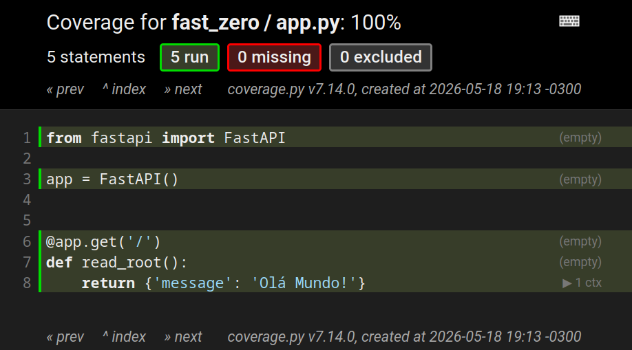
Las líneas con (empty) continúan, pues son importadas sin ningún test. Sin embargo, la última línea tiene una flechita con 1 ctx. Eso quiere decir que nuestro test ejecutó aquella línea en específico.
Al hacer clic en ella:
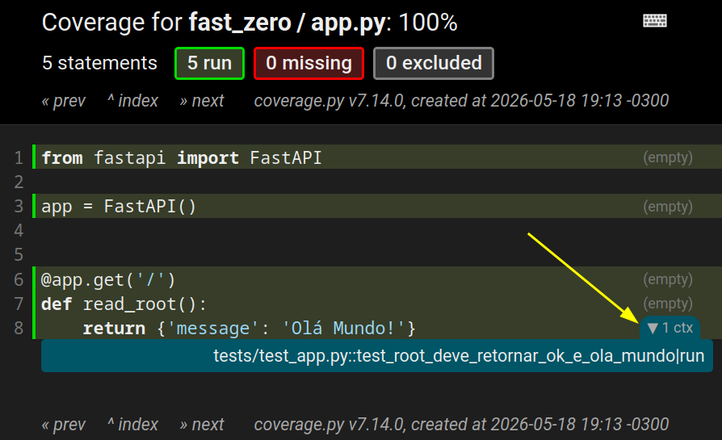
Podemos ver exactamente el archivo de test y qué test en específico ejecutó la línea en cuestión: tests/test_app.py::test_root_deve_retornar_ok_e_ola_mundo. Esto facilita bastante el entendimiento de qué test pasa por determinado camino en la aplicación.
Estructura de un test
Ahora que escribimos nuestro primer test intuitivamente, podemos entender qué hace cada paso del test. Esta comprensión es vital, pues nos ayudará a escribir tests con más confianza y eficacia. Para desvendar el método detrás de nuestro enfoque, exploraremos una estrategia conocida como AAA, que divide el test en tres fases distintas: Arrange, Act, Assert.
Para analizar todas las etapas de un test, usaremos como ejemplo este primer test que escribimos:
Con base en este código, podemos observar las tres fases:
Fase 1 - Organizar (Arrange)
En esta primera etapa, estamos preparando el entorno para el test. En el ejemplo, la línea con el comentario Arrange no es el test en sí, ella monta el entorno para que el test pueda ser ejecutado. Estamos configurando un client de tests para hacer la solicitud al app.
Fase 2 - Actuar (Act)
Aquí es la etapa donde sucede la acción principal del test, que consiste en llamar al Sistema Bajo Test (SUT). En nuestro caso, el SUT es la ruta /, y la acción es representada por la línea response = client.get('/'). Estamos ejercitando la ruta y almacenando su respuesta en la variable response. Es la fase en que el código de tests ejecuta el código de producción que está siendo testeado. Actuar aquí significa interactuar directamente con la parte del sistema que queremos evaluar, para ver cómo se comporta.
Fase 3 - Afirmar (Assert)
Esta es la etapa de verificar si todo ocurrió como se esperaba. Es fácil notar dónde estamos haciendo la verificación, pues esa línea siempre tiene la palabra reservada assert. La verificación es booleana, o está correcta, o no está. Por eso, un test debe siempre incluir un assert para verificar si el comportamiento esperado está correcto.
Ahora que comprendemos qué hace cada línea de test en específico, podemos orientarnos de forma clara en los tests que escribiremos en el futuro. Cada una de las líneas usadas tiene una razón de estar en el test, y conocer esta estructura no solo nos da una comprensión más profunda de lo que estamos haciendo, sino que también nos da confianza para explorar y escribir tests más complejos.
Creando nuestro repositorio en git
Antes de concluir, necesitamos ejecutar algunos pasos:
- Crear un archivo
.gitignorepara no agregar el entorno virtual y otros archivos innecesarios en el versionado de código. - Crear un nuevo repositorio en GitHub para versionar el código.
- Subir el código que hicimos a GitHub.
Creando el archivo .gitignore
Vamos a iniciar con la creación de un archivo .gitignore específico para Python. Existen diversos modelos disponibles en internet, como los disponibles por el propio GitHub, o el gitignore.io. Una herramienta útil es la ignr, hecha en Python, que hace el download automático del archivo para nuestra carpeta de trabajo actual:
- El comando
pipx runva a descargar elignr, va a ejecutar el comando y va a desinstalarlo. No existe la necesidad de tenerlo instalado en el sistema, pues solo será ejecutado esta vez.
El .gitignore es importante porque nos ayuda a evitar que archivos innecesarios o sensibles sean enviados al repositorio. Esto incluye el entorno virtual, archivos de configuración personal, entre otros.
Creando un repositorio en github
Ahora, con nuestros archivos indeseados ignorados, podemos iniciar el versionado de código usando el git. Para crear un repositorio local, usamos el comando git init .. Para crear ese repositorio en GitHub, utilizaremos el gh, un utilitario de línea de comando que nos auxilia en este proceso:
Al ejecutar gh repo create, se solicitarán algunas informaciones, como el nombre del repositorio y si será público o privado. Esto creará un repositorio tanto localmente como en GitHub.
Subiendo nuestro código a github
Con el repositorio listo, vamos a versionar nuestro código. Primero, agregamos el código al próximo commit con git add .. A continuación, creamos un punto en la historia del proyecto con git commit. Por último, sincronizamos el repositorio local con el remoto en GitHub usando git push:
git add .
git commit -m "chore: configuración inicial del proyecto"
git push
En caso de que sea la primera vez que estás utilizando el
git push, tal vez sea necesario configurar tus credenciales de GitHub.
Estos pasos garantizan que todo el código que creamos esté versionado y disponible para compartirlo en GitHub.
Estándares en commits
Puedes haber notado algo diferente en este mensaje de commit:
Este chore: al comienzo no es adorno, forma parte de un estándar llamado Conventional Commits.
La idea de este tipo de commit es bastante simple: dar significado a los commits, dejando claro el tipo de cambio que fue hecho, solo mirando el mensaje.
En vez de commits con mensajes genéricos como:
"arregla cosa""agregando clase XPTO""update"
pasamos a escribir algo más estructurado:
Cada prefijo tiene un papel:
feat: una nueva funcionalidadfix: corrección de bugchore: cambios sin impacto directo en el comportamiento del sistema (infra, tooling, dependencias, scripts)refactor: reorganización de código sin cambiar comportamientotest: adición o ajuste de testsdocs: cambios en la documentación
En nuestro caso:
tiene sentido porque no estamos creando una feature ni corrigiendo un bug. Estamos solo preparando el terreno: dependencias, herramientas, estructura inicial.
Esto ayuda en dos cosas bien prácticas:
- Histórico más legible: se puede entender la evolución del proyecto sin descifrar commits genéricos.
- Automatización futura: en proyectos más grandes, estos estándares ayudan a generar changelog automáticamente y hasta facilitar versionado semántico.
Esto no es obligatorio en repositorios git, pero, como estamos buscando construir buenas prácticas de desarrollo de código, es importante practicarlas para interiorizarlas.
Ejercicios
Agrega el typos para analizar gramática en inglés para ser ejecutado antes de la etapa de lint, transformándola en una secuencia que corra el typos y el ruff check en la tabla [tool.poe.tasks] de tu archivo pyproject.toml.
Código de esta lección
Conclusión
¡Listo! Ahora tenemos un entorno de desarrollo totalmente configurado para comenzar a trabajar con FastAPI y ya hicimos nuestra primera inmersión en el Desarrollo Orientado por Tests. En la próxima sección, profundizaremos en la estructura de nuestra aplicación FastAPI.
-
Exploraremos más a fondo la relación de métodos y el protocolo HTTP en la próxima clase. ↩
-
En algunos casos, existe una divergencia de opiniones entre los linters más tradicionales. Pero, en general, funciona bien. ↩
-
En versiones antiguas del texto, usábamos las herramientas del PyCQA como el pylint y el isort. ↩